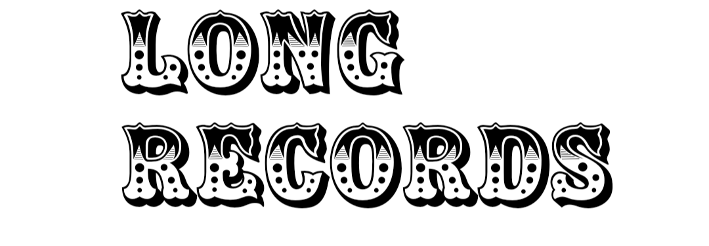

فلسفہ
از قلم : یاور جاوید
کہنے کو تو کتابیں بھری جا سکتی ہیں، لیکن فلسفہ اجازت نہیں دیتا۔ اصل ڈھونڈنے جائیں تو کچھ خبر نہیں۔ روح یا مادہ یا دونوں۔ کون جانے۔
اخلاقیات میں جائیں تو بنیاد ہی ہلی ہوئی ملتی ہے۔ کیا حاسۂ اخلاقیات فیصلہ کرے گی یا عقل؟ کیا پتا، کون جانے۔
جمال دیکھنے جائیں تو سمیٹتے نہیں، سمٹتا۔ اسی وجہ سے میں اسے فلسفے کا موضوع نہیں سمجھتا، ورنہ کیا مجال کہ بنیاد ہی کھوکھلی نہ ہو۔
پھر سوچیے، دماغ کا کیا بھروسا۔ خواب میں کیا کیا چیزیں سچ اور عقلی سمجھتا ہے۔ بیداری میں بھی کرتا ہو، کیا پتا؟
اس کے بعد تو یہ پیراگراف بھی مٹا ہی دیجیے۔